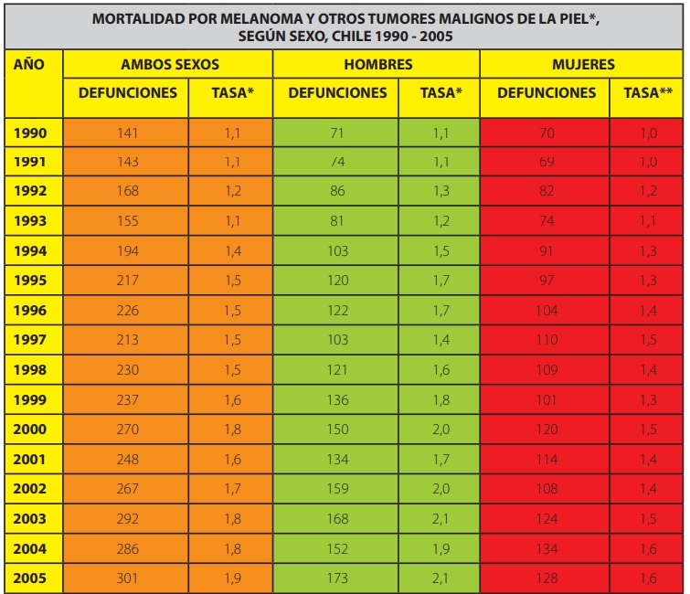

La situación en Chile
En Chile, la exposición prolongada al sol representa un grave problema de salud pública, especialmente en lo que respecta a la incidencia de cáncer de piel. A pesar de que cada vez más personas están conscientes del cuidado de la piel, muchas aún no utilizan protector solar de forma regular, lo que ha contribuido a que el país registre una alta tasa de mortalidad debido a tumores malignos relacionados con la piel.
La situación se agrava porque gran parte de la población no tiene el hábito de usar protector solar diariamente, lo que incrementa su vulnerabilidad a los efectos dañinos del sol, como el cáncer de piel, la hiperpigmentación y enfermedades como la rosácea.
Aunque los efectos no se perciban inmediatamente, estos pueden manifestarse años después, afectando gravemente a las personas en la adultez y en la vejez. Es necesario, por lo tanto, no subestimar los peligros de la radiación solar, ya que, aunque sus efectos son silenciosos, pueden ser fatales si no se toman medidas preventivas como el uso constante de protector solar.
Por lo tanto, nuestro objetivo principal es proporcionar información detallada y crucial acerca de los rayos UV, sus efectos nocivos en la piel y las consecuencias a largo plazo de la exposición sin protección. Queremos educar a la población sobre la importancia de tomar medidas preventivas, como el uso constante de protector solar y ropa adecuada.
La situación en Chile
En este análisis se observa que la tasa de mortalidad por cáncer de piel (melanomas) ha ido aumentando con los años, probablemente debido al escaso o nulo uso de protector solar. Es fundamental empezar a cuidar la piel desde una edad temprana, ya que el daño solar se acumula con el tiempo y aumenta el riesgo de desarrollar cáncer en la adultez.
